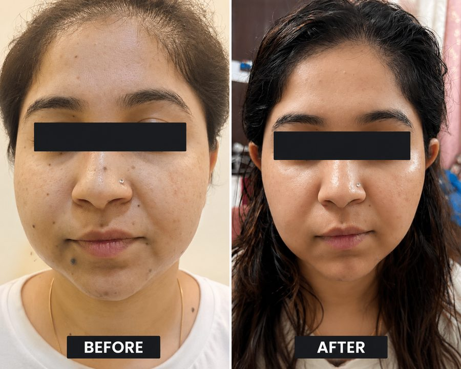
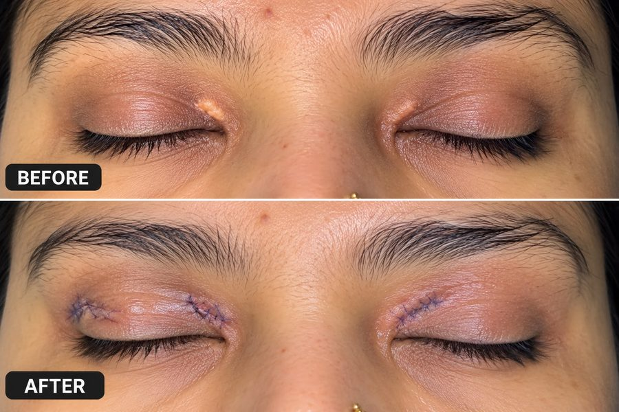

Careful, dermatologist-led removal of moles, skin tags, cysts, xanthelasma and other benign skin growths - with every lesion properly examined before any procedure.
Moles, skin tags, cysts and other skin growths are extremely common, and most are harmless - but that's a conclusion Dr. Iftekhar Khan reaches only after a proper examination, never an assumption made before one. At Truederm in C-Scheme, Jaipur, every growth is assessed first, then removed using the safest, most scar-conscious technique for its size and location.
Not every growth should simply be removed on request. Dr. Khan examines each mole or lesion for the warning signs of skin cancer before recommending a cosmetic removal. Where a growth looks atypical or has been changing, it is treated with the appropriate surgical protocol and sent for histopathological (laboratory) evaluation to confirm what it is - the same careful process reflected in the surgical results Truederm shares from real patient cases.

Precise removal with attention to scarring and cosmetic outcome.

Careful removal of cholesterol deposits around the eyelids.
Technique is chosen based on the size, depth and location of the growth to minimise scarring as much as possible. Most small removals heal into a barely visible mark when aftercare instructions are followed.
Watch for the ABCDE warning signs: Asymmetry, irregular Borders, multiple Colours, a Diameter larger than a pencil eraser, or any mole that's Evolving in size, shape or colour. If you notice any of these, get it examined promptly rather than waiting for a routine visit.
Procedures are done under local anaesthesia, so you shouldn't feel pain during the removal itself. Mild soreness at the site afterwards is normal and settles within a few days.
A removed skin tag or cyst does not regrow at that exact spot, though new ones can develop elsewhere on the skin over time, which is common and unrelated to the treated area.
Take the first step towards healthier skin and hair. Visit us in C-Scheme, Jaipur or book online.